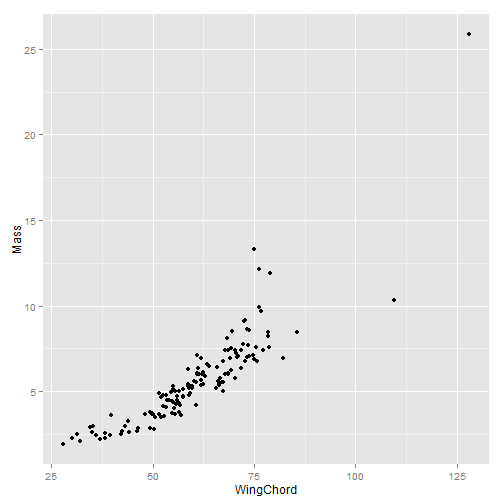
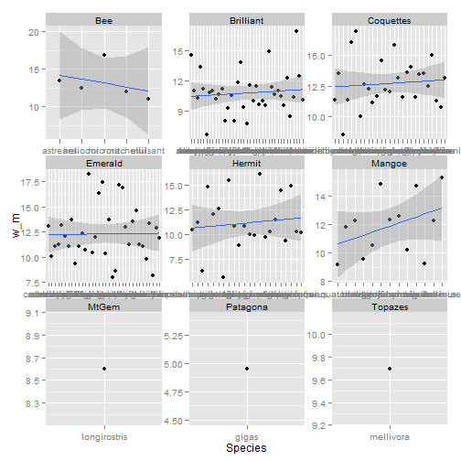

As scientists, our major currency is data. R provides a common ground for data analysis. Using R for data visualization, exploration, and analysis opens up a massive set of tools. You will find that nothing, absolutely nothing, you will do has not been atleast tried before. There are packages covering every imaginable type of ecological, evolutionary, and statiscal approaches. Today we will discuss how to read in data, perform basic functions, and produce figures.
Data
Import, exploration, and plotting
Ben Weinstein

Tips for Importing Data
Data is easiest to read in a .csv format, in excel, save as -> comma seperated csv.
Avoid Spaces, Special Characters, or hanging lines of data.
# Load in the ggplot2 library, which we will use later.
library(ggplot2)
traits <- read.csv("C:/Users/Jorge/Documents/Rcourse/Data/Traits.csv")
head(traits)
## X Clade Genus Species double
## 1 1 Coquettes Adelomyia melanogenys Adelomyia melanogenys
## 2 2 Brilliant Aglaeactis cupripennis Aglaeactis cupripennis
## 3 3 Coquettes Aglaiocercus coelestis Aglaiocercus coelestis
## 4 4 Coquettes Aglaiocercus kingi Aglaiocercus kingi
## 5 5 Emerald Amazilia amazilia Amazilia amazilia
## 6 6 Emerald Amazilia castaneiventris Amazilia castaneiventris
## English Bill Mass WingChord
## 1 Speckled Hummingbird 15.04 4.245 55.87
## 2 Shining Sunbeam 18.71 8.440 85.62
## 3 Violet-tailed Sylph 16.25 6.070 68.68
## 4 Long-tailed Sylph 15.77 5.530 67.12
## 5 Amazilia Hummingbird 18.54 4.070 53.33
## 6 Chestnut-bellied Hummingbird 18.70 4.750 52.70
Data Explortation
It is critical to consider your data carefully. Are they categorical, are they numeric, how much variance is there? Are they complete? For categorical data, the best place to start are contingency tables How many speccies per clades are there? For continues data, try range, sd mean
table(traits$Clade)
##
## Bee Brilliant Coquettes Emerald Hermit Mangoe MtGem
## 5 37 27 34 22 13 1
## Patagona Topazes
## 1 1
mean(traits$Bill)
## [1] 21.41
Try It!
- What are the range of body sizes?
- Which genus has the most species?
- Look up the which.max function; read the help screen; which species has the longest bill?
- Create a two way table of genus and clade, what does this show?

ggplot2
The ggplot library is the gold-standard for plotting. It allows basic, intuitive, plots that can be endlessly customized. The help screens are full of clear examples, and there is a massive online community to search basic plotting questions. Let's explore our first plot.
For now, we will always be setting global aesthestics inside the ggplot() and not the geom_point().
ggplot(traits, aes(x = Clade, y = Mass)) + geom_point()

# What if we want something besides points
ggplot(traits, aes(x = Clade, y = Mass)) + geom_boxplot()

#There are many geomstyles type geom and hit tab to see types, and then using ?geom_nameofgeom to see their help screens
Building more complex plots
---------------------------
Continious colors can be added (and edited) to add more information
```r
ggplot(traits, aes(x = Mass, y = WingChord, color = Bill)) + geom_point()

Building more complex plots
Shapes and sizes can be added as well, note how ggplot automatically groups by both variables. In this case we have a bit too many to make it helpful, but it depends on your data.
ggplot(traits, aes(x = Mass, y = WingChord, color = Bill, shape = Clade)) +
geom_point()

ggplot is very smart. Trust it.
Shapes and sizes can be added as well, note how ggplot automatically groups by both variables. In this case we have a bit too many to make it helpful, but it depends on your data.
ggplot(traits, aes(x = Bill, y = WingChord, color = Clade, size = Mass)) + geom_point()

ggplot is very smart. Trust it.
Try it!
- Plot Bill as a function of Wingchord, save it as object p
- Plot Bill against clade membership, which clade has the lowest median bill size?
- Look up geom_histogram, what does it go? made a histogram of Bill sizes.
- Color your histogram by clade membership, which clade does the outlier belong to?
Adding multiple geometries to a plot
Often we want to express more information than a single geometric object, ggplot allows us immense flexiblity by allowing us to build on our initial plot
p <- ggplot(traits, aes(x = Mass, y = Bill)) + geom_point() + geom_smooth()
p

Practice plotting
To show some more features, let's make a bit smaller dataset
#Given a bit smaller dataset, we can explore more options, add both color and shape, drawing on what we've done already, how would we subset our data to just get the coquettes clades?
Add image of a coquette here.
coq <- droplevels(traits[traits$Clade == "Coquettes", ])
Text can be added, and manipulated directly
ggplot(coq, aes(x = Bill, y = WingChord, size = Mass, label = Genus)) + geom_point() +
geom_text(size = 3)

ggplot(coq, aes(x = Species, y = WingChord, col = Bill, size = Mass)) + geom_point() +
facet_grid(~Genus, scales = "free") + theme_bw() + theme(axis.text.x = element_text(angle = -90)) +
scale_color_continuous(low = "blue", high = "red") + ylab("Wing Length")

10min Group Assignment
Come up with a simple question and represent it graphically
Exporting Dataframes
If we want to export the data that we created, we can save it to file as a csv
write.csv(coq, "Coquettes.csv")